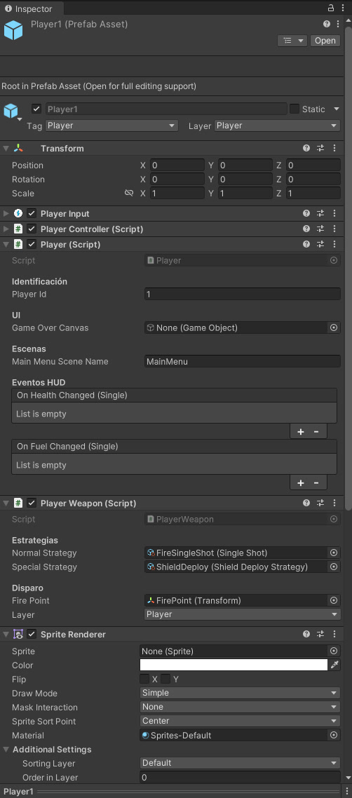
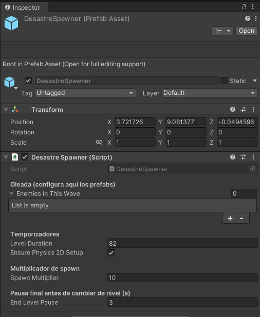
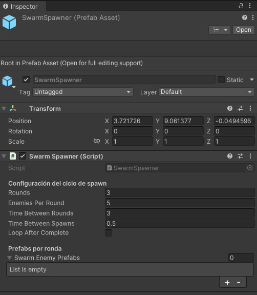
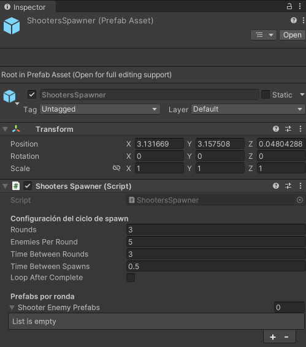
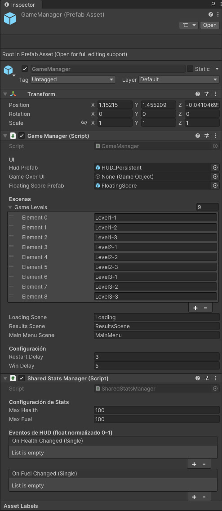

2 Valhalla.
Dos dragones, un mando y el Ragnarök esperando al final.
Un shoot 'em up de desplazamiento vertical en el que controlamos dos dragones simultáneamente, solos o en pareja. Entre oleadas de enemigos y habilidades combinadas, hay que llegar hasta Jörmungandr, la serpiente del mundo, para detener el Ragnarök.
Diseñar la locura y hacerla funcionar
En 2 Valhalla me encargué del diseño de niveles y mecánicas, además de toda la implementación del código. Éramos tres y repartimos el trabajo por áreas: Rafa se ocupó del pixel art y Javi del diseño de interfaces, la documentación y el marketing.
Mi parte abarcó desde el control de ambos dragones y sus habilidades hasta los enemigos, los generadores de oleadas, los jefes, la energía, las mejoras y los sistemas de puntuación y progresión.
¿Y si controlamos dos personajes a la vez?
Quería darle una vuelta al control habitual de los juegos de naves. Brothers: A Tale of Two Sons y A Way Out fueron algunas de las referencias que me animaron a experimentar con el reparto de controles.
Cada dragón se controla de manera independiente. Se puede jugar entre dos personas o intentar llevar ambos al mismo tiempo. La vida y el combustible son compartidos: separar las posiciones amplía la cobertura, pero también reparte la atención entre dos puntos de riesgo. Las habilidades compiten por una misma reserva de energía.
Defender y atacar con herramientas distintas
Player1 combina FireSingleShot con ShieldDeploy; Player2 utiliza IceSingleShot y BigPiercingShot. Compartir estructura de control y separar las estrategias de arma permite ajustar cada función sin rehacer el personaje.
12 s · El proyectil especial es visible. Esta toma no demuestra que atraviese varios enemigos.
Ver configuración de Player1 y Player2

Composición controlada, orden variable
Elegir las amenazas
La versión revisada configura listas de enemigos por nivel. DesastreSpawner repite esas entradas, baraja su orden y distribuye las apariciones durante la duración del nivel. Así cambia la secuencia manteniendo una composición definida.
La progresión introduce primero variación de trayectorias, después disparos y finalmente cargas y abanicos. La cantidad importa, pero también la combinación de amenazas que hay que leer.
Ajustar el ritmo
El prefab de DesastreSpawner expone 82 s de duración, multiplicador 10 y 3 s de pausa final. SwarmSpawner y ShootersSpawner permiten configurar rondas, cantidad y separación entre apariciones.
Las listas de estos prefabs están vacías; la composición efectiva se configura en las escenas. No se ha encontrado un presupuesto por valor de enemigo en esta versión.
Ver parámetros de los tres spawners



Reposicionarse y leer los huecos
El jefe recorre la parte superior y alterna proyectiles aislados con grupos de distinta apertura. El encuentro combina la atención a dos personajes con la lectura del siguiente patrón.
18 s · Grabación de demostración con contadores 999. Permite observar patrones, pero no evaluar el balance, una derrota del jefe o cambios de fase.
Recursos comunes, progresión centralizada
GameManager reúne HUD, puntuación flotante y la secuencia de nueve niveles de Level1-1 a Level3-3. SharedStatsManager configura máximos de 100 de vida y 100 de combustible; el código centraliza ambos recursos para los dragones.
Ver configuración de GameManager

La lista visible no incluye Level4. La grabación acredita el encuentro con el jefe, pero esta captura no explica cómo se accede a él.
Cuando las mecánicas empiezan a pelearse
Dos problemas que se multiplicaban
El reto principal fue equilibrar la cantidad de enemigos con las habilidades de los dragones. Si las oleadas eran demasiado intensas, el control simultáneo resultaba abrumador. Ajustar composición, cadencia y recursos permitía trabajar sobre esa tensión.
Probar, ajustar y volver a probar
El equipo probó el juego durante el desarrollo y también lo jugaron los evaluadores de la universidad. Revisamos una y otra vez los patrones, la composición de las oleadas y las cantidades de enemigos hasta cerrar una versión completa.
Lo que haría diferente hoy
Aprendí lo mucho que facilita el trabajo construir sistemas modulares. Cuando armas, enemigos, habilidades y oleadas dependen unos de otros, poder ajustar una pieza sin romper las demás es casi una mecánica de supervivencia para quien programa.
También descubrí que la aleatoriedad no siempre juega a favor del género. Las oleadas variables aportaban variedad, pero complicaban aprender patrones y comparar puntuaciones, dos aspectos importantes para parte del público de los shoot 'em up.
Si lo retomara, revisaría el sistema de oleadas y simplificaría las habilidades iniciales de los dragones. Controlar dos personajes ya es bastante desafío: conviene introducir la complejidad poco a poco, empezando por lo esencial y escalando cuando funciona.
Tres meses y una pequeña locura
Lo desarrollamos en tres meses, aprovechando los ratos libres que teníamos. El resultado fue un juego terminado, con un nivel de dificultad bastante alto por su control simultáneo. Aunque, después de tantas horas probando mecánicas, ajustando enemigos y repitiendo partidas, terminé pasándomelo entero. Alguna ventaja tenía que tener ser quien lo programaba.
El equipo
- Cristian Rodríguez Díaz
- Diseño de niveles, diseño de mecánicas y programación
- Rafa
- Pixel art
- Javi
- Interfaces, documentación y marketing
- Recursos adicionales
- Materiales externos empleados durante el desarrollo
Proyecto académico de la Universidad Europea. Repositorio privado. Versión ejecutable pendiente de localizar.